📚 ບົດຮຽນສະຫຼຸບ Arduino (ສະບັບສົມບູນ)
ໜ້າເວັບນີ້ແມ່ນການສະຫຼຸບເນື້ອໃນທັງໝົດທີ່ເຮົາໄດ້ສົນທະນາກັນ ເພື່ອກຽມພ້ອມສຳລັບການສອບເສັງຂອງທ່ານ.
1. ພື້ນຖານ: Arduino ແມ່ນຫຍັງ?
Arduino ແມ່ນ ສະໝອງກົນ (Microcontroller Board) ທີ່ເຮັດໜ້າທີ່ເປັນໂຕກາງໃນການເຊື່ອມຕໍ່ລະຫວ່າງໂລກດິຈິຕອລ (ໂຄດ/ໂປຣແກຣມ) ກັບໂລກພາຍນອກ (ອຸປະກອນໄຟຟ້າ). ທີ່ເຮົາສາມາດຂຽນໂປຣແກຣມເຂົ້າໄປເພື່ອຄວບຄຸມອຸປະກອນຕ່າງໆໄດ້ ເຊັ່ນ ເປີດ-ປິດໄຟ, ຄວບຄຸມຄວາມໄວຂອງມໍເຕີ ຫຼື ສ້າງລະບົບອັດຕະໂນມັດຕ່າງໆໄດ້ ປຽບເໝືອນກັບຄອມພິວເຕີຂະໜາດນ້ອຍເລີຍ.
ໃຫ້ຈິນຕະນາການງ່າຍໆດັ່ງນີ້:
- ສະໝອງ: Arduino Board (ເຊັ່ນ UNO R3) - ເປັນໂຕຄິດ ແລະ ຕັດສິນໃຈ.
- ອະໄວຍະວະຮັບຄວາມຮູ້ສຶກ: Input Devices (ເຊັ່ນ ເຊນເຊີ, ປຸ່ມກົດ) - ໃຊ້ຮັບຮູ້ສະຖານະ.
- ອະໄວຍະວະສັ່ງການ: Output Devices (ເຊັ່ນ LED, ມໍເຕີ, ຈໍ LCD) - ໃຊ້ສະແດງຜົນ.
2. ພື້ນຖານສຳຄັນ: Input vs Output
ຫົວໃຈຫຼັກຂອງມັນຄື ທິດທາງການໄຫຼຂອງຂໍ້ມູນ:
📥 Input (ຮັບເຂົ້າ)
ຄື ອຸປະກອນທີ່ສົ່ງຂໍ້ມູນເຂົ້າສູ່ Arduino (ສະໝອງ) ເພື່ອໃຫ້ Arduino ຮັບຮູ້ສະຖານະພາຍນອກ.
- ໜ້າທີ່: ຮັບຮູ້, ຕວດຈັບ, ອ່ານຄ່າ.
- ຕົວຢ່າງ: ປຸ່ມກົດ (ບອກວ່າ "ຂ້ອຍຖືກກົດ"), ເຊນເຊີ DHT11 (ບອກວ່າ "ອຸນຫະພູມ 28 ອົງສາ").
📤 Output (ສົ່ງອອກ)
ຄື ອຸປະກອນທີ່ຮັບຄຳສັ່ງຈາກ Arduino (ສະໝອງ) ເພື່ອສະແດງຜົນ ຫຼື ເຮັດວຽກບາງຢ່າງ.
- ໜ້າທີ່: ສະແດງຜົນ, ຂັບເຄື່ອນ, ສັ່ງການ.
- ຕົວຢ່າງ: ຫຼອດໄຟ LED (ຮັບຄຳສັ່ງ "ໃຫ້ຕິດ"), ຈໍ LCD (ຮັບຄຳສັ່ງ "ໃຫ້ສະແດງຂໍ້ຄວາມ").
3. ພື້ນຖານສຳຄັນ: Digital vs Analog
ນີ້ແມ່ນລັກສະນະຂອງ "ສັນຍານ" ທີ່ໃຊ້ໃນການສື່ສານ:
| ຄຸນສົມບັດ | 🛑 ສັນຍານດິຈິຕອລ (Digital) | 🌊 ສັນຍານອະນາລັອກ (Analog) |
|---|---|---|
| ລັກສະນະ | ມີພຽງ 2 ສະຖານະ: ເປີດ (HIGH) ຫຼື ປິດ (LOW). | ຕໍ່ເນື່ອງ, ມີຫຼາຍລະດັບ (ຄືກັບລູກບິດປັບສຽງ). |
| ຄ່າ (Input) | HIGH (1) ຫຼື LOW (0). | ຕົວເລກ 0 ເຖິງ 1023 (ສະແດງເຖິງແຮງດັນ 0V-5V). |
| ຄ່າ (Output) | HIGH (ເປີດ) ຫຼື LOW (ປິດ). | ຕົວເລກ 0 ເຖິງ 255 (ເອີ້ນວ່າ PWM). |
| ຕົວຢ່າງ Input | ປຸ່ມກົດ, PIR Motion Sensor, Float Switch. | Potentiometer (ຕົວຕ້ານທານປັບຄ່າໄດ້), TDS Sensor. |
| ຕົວຢ່າງ Output | ໄຟ LED ຕິດ/ດັບ, Relay ເປີດ/ປິດ. | ຄວາມສະຫວ່າງ LED, ຄວາມໄວມໍເຕີ. |
| ຄຳສັ່ງຫຼັກ | digitalRead(), digitalWrite(). |
analogRead(), analogWrite(). |
4. ໂຄງສ້າງ ແລະ ຄຳສັ່ງຫຼັກໃນການຂຽນໂຄດ
ໂຄດທຸກອັນຈະມີ 2 ສ່ວນຫຼັກ:
void setup() { ... }: ສ່ວນທີ່ເຮັດວຽກ ເທື່ອດຽວ ເມື່ອເປີດເຄື່ອງ (ໃຊ້ກຳນົດpinMode).void loop() { ... }: ສ່ວນທີ່ເຮັດວຽກ ຊ້ຳໆ ຕະຫຼອດເວລາ (ວົງຈອນ: ຮັບຄ່າ $\rightarrow$ ປະມວນຜົນ $\rightarrow$ ສັ່ງງານ).
ຄຳສັ່ງທີ່ໃຊ້ຄວບຄຸມ I/O
| ຄຳສັ່ງ | ໜ້າທີ່ | ຕົວຢ່າງ |
|---|---|---|
pinMode(pin, mode); |
ກຳນົດໜ້າທີ່ຂອງຂາ (Pin) ວ່າຈະເປັນ INPUT ຫຼື OUTPUT. | pinMode(13, OUTPUT); |
digitalWrite(pin, value); |
ສັ່ງງານ Output ແບບ Digital (ເປີດ/ປິດ). | digitalWrite(13, HIGH); (ສັ່ງໃຫ້ໄຟຕິດ) |
digitalRead(pin); |
ອ່ານຄ່າ Input ແບບ Digital (ກວດສອບສະຖານະ). | int state = digitalRead(2); (ກວດສອບປຸ່ມກົດ) |
analogWrite(pin, value); |
ສັ່ງງານ Output ແບບ Analog/PWM (ປັບລະດັບ 0-255). | analogWrite(9, 127); (ສັ່ງໃຫ້ LED ສະຫວ່າງເຄິ່ງໜຶ່ງ) |
analogRead(pin); |
ອ່ານຄ່າ Input ແບບ Analog (ອ່ານຄ່າລະດັບ 0-1023). | int val = analogRead(A0); (ອ່ານຄ່າຈາກ Potentiometer) |
5. ຕົວຢ່າງໂຄດພື້ນຖານ (Digital I/O ແລະ Analog I/O)
5.1 ຕົວຢ່າງ Digital: ປຸ່ມກົດ (Input) ຄວບຄຸມ LED (Output)
ໂຄງການນີ້ສະແດງການໃຊ້ digitalRead() ເພື່ອຮັບຄ່າຈາກປຸ່ມ, ແລະ digitalWrite() ເພື່ອສັ່ງງານ LED.
// C++ code
int buttonPin = 2; // ປຸ່ມກົດຕໍ່ທີ່ຂາ 2 (Input)
int ledPin = 13; // LED ຕໍ່ທີ່ຂາ 13 (Output)
void setup() {
pinMode(buttonPin, INPUT); // ຕັ້ງຄ່າຂາ 2 ເປັນ Input
pinMode(ledPin, OUTPUT); // ຕັ້ງຄ່າຂາ 13 ເປັນ Output
}
void loop() {
// 1. ຮັບຂໍ້ມູນ (Input)
int buttonState = digitalRead(buttonPin); // ອ່ານສະຖານະຈາກປຸ່ມກົດ
// 2. ປະມວນຜົນ (Process)
if (buttonState == HIGH) {
// 3. ສັ່ງງານ (Output)
digitalWrite(ledPin, HIGH); // ຖ້າປຸ່ມຖືກກົດ (HIGH) ໃຫ້ LED ຕິດ
} else {
// 3. ສັ່ງງານ (Output)
digitalWrite(ledPin, LOW); // ຖ້າປຸ່ມບໍ່ຖືກກົດ (LOW) ໃຫ້ LED ດັບ
}
}
5.2 ຕົວຢ່າງ Analog: Potentiometer (Input) ຄວບຄຸມຄວາມສະຫວ່າງ LED (Output)
ໂຄງການນີ້ສະແດງການໃຊ້ analogRead() ເພື່ອຮັບຄ່າ 0-1023, ແລະ analogWrite() ເພື່ອສັ່ງງານ PWM 0-255.
// C++ code
int potPin = A0; // Potentiometer ຕໍ່ທີ່ຂາ A0 (Analog Input)
int ledPin = 9; // LED ຕໍ່ທີ່ຂາ 9 (PWM Output)
void setup() {
pinMode(ledPin, OUTPUT); // ຕັ້ງຄ່າຂາ 9 ເປັນ Output
}
void loop() {
// 1. ຮັບຂໍ້ມູນ (Input)
int sensorValue = analogRead(potPin); // ອ່ານຄ່າ 0-1023
// 2. ປະມວນຜົນ (Process)
// ປ່ຽນຄ່າ 0-1023 ໃຫ້ເປັນ 0-255 ໂດຍໃຊ້ຄຳສັ່ງ map()
int outputValue = map(sensorValue, 0, 1023, 0, 255);
// 3. ສັ່ງງານ (Output)
analogWrite(ledPin, outputValue); // ສັ່ງຄວາມສະຫວ່າງ LED ຕາມຄ່າທີ່ໝູນ
}
6. ລາຍລະອຽດອຸປະກອນຫຼັກ 24 ລາຍການ (ຈາກລາຍການສອບເສັງ)
🧠 ສ່ວນຄວບຄຸມ ແລະ ໂຄງສ້າງຫຼັກ (The Core)
| ລ/ດ | ຮູບ | ຊື່ອຸປະກອນ | ໜ້າທີ່ ແລະ ລາຍລະອຽດ |
|---|---|---|---|
| 1 | 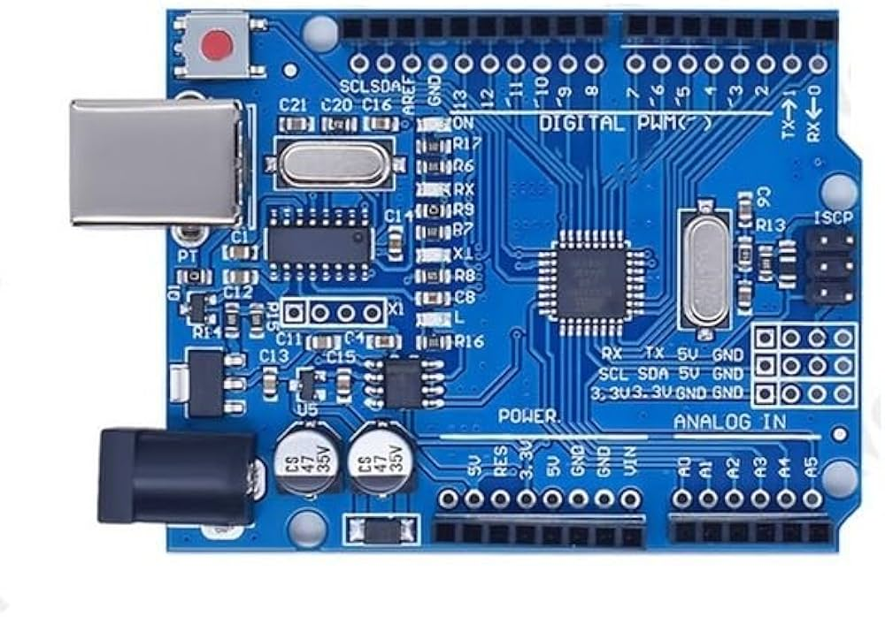 | Board Arduino UNO R3 | ສະໝອງຫຼັກ ທີ່ໃຊ້ໃນການປະມວນຜົນຄຳສັ່ງ ແລະ ຄວບຄຸມອຸປະກອນອື່ນໆ. |
| 2 | 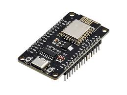 | NodeMCU V3 Lua WIFI, ESP8266 | ສະໝອງກົນອີກຊະນິດໜຶ່ງ ທີ່ມີ Wi-Fi ໃນໂຕ. ໃຊ້ສຳລັບໂຄງການ IoT. |
| 3 | 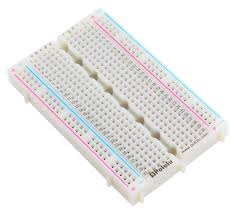 | Breadboard 400 Point | ແຜ່ນວົງຈອນທົດລອງ ໃຊ້ສຽບສາຍໄຟ ແລະ ອຸປະກອນໂດຍບໍ່ຕ້ອງບັດກຣີ. |
| 4 | 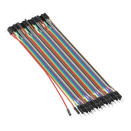 | ສາຍ Jumper 20 cm | ສາຍໄຟສຳລັບເຊື່ອມຕໍ່ອຸປະກອນຕ່າງໆ ເຂົ້າກັບ Breadboard ແລະ Arduino. |
🔋 ສ່ວນແຫຼ່ງຈ່າຍໄຟ (Power Management)
| ລ/ດ | ຮູບ | ຊື່ອຸປະກອນ | ໜ້າທີ່ ແລະ ລາຍລະອຽດ |
|---|---|---|---|
| 6 | 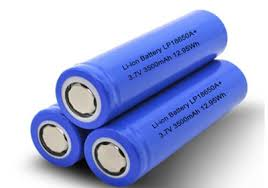 | ແບັດເຕີຣີ 18650 Battery Cell 3.7V | ແຫຼ່ງພະລັງງານຫຼັກ (3.7V) ສຳລັບໂຄງການທີ່ບໍ່ໄດ້ສຽບສາຍ USB. |
| 10 | 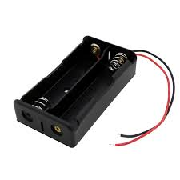 | ກ່ອງໃສ່ແບັດເຕີຣີ 18650 | ໃຊ້ສຳລັບໃສ່ແບັດເຕີຣີ ເພື່ອຕໍ່ສາຍໄຟອອກມາໃຊ້ງານ. |
| 9 | 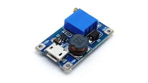 | ໂມດູນ MT3608 Step Up DC Module | ໂມດູນເພີ່ມແຮງດັນໄຟ (ເຊັ່ນ: ຈາກ 3.7V ໃຫ້ເປັນ 5V ຫຼື 12V). |
| 12 | 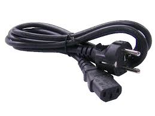 | ສາຍເຊື່ອມຕໍ່ປລັກໄຟຟ້າບ້ານ 220 ໂວນ | ສາຍໄຟ AC. ຕ້ອງໃຊ້ຮ່ວມກັບ Relay (ລາຍການ 24) ເພື່ອຄວບຄຸມເຄື່ອງໃຊ້ໄຟຟ້າບ້ານ. |
📥 ອຸປະກອນຮັບຂໍ້ມູນ (Input Devices/Sensors)
| ລ/ດ | ຮູບ | ຊື່ອຸປະກອນ | ໜ້າທີ່ ແລະ ລາຍລະອຽດ | ປະເພດ |
|---|---|---|---|---|
| 5 | 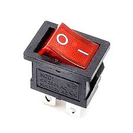 | On/Off Switch | ປຸ່ມກົດ. ຮັບຄຳສັ່ງຈາກຜູ້ໃຊ້ (HIGH/LOW). | Digital Input |
| 18 | 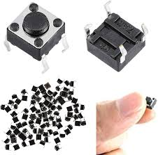 | TACT PUSH button SWITCH (6x6x4.5mm) | ປຸ່ມກົດ. ຮັບຄຳສັ່ງຈາກຜູ້ໃຊ້ (HIGH/LOW). | Digital Input |
| 20 | 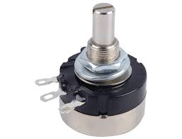 | Potentiometer (Volume 3 pin) | ຕົວຕ້ານທານປັບຄ່າໄດ້. ໃຊ້ໝູນເພື່ອຮັບຄ່າ (0-1023). | Analog Input |
| 21 | 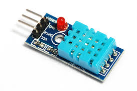 | ເຊນເຊີ DHT11 | ວັດຄ່າອຸນຫະພູມ ແລະ ຄວາມຊື້ນ ຂອງອາກາດ. | Digital Sensor |
| 22 |  |
ເຊນເຊີ HC-SR501 PIR Motion Sensor | ຕວດຈັບການເຄື່ອນໄຫວຂອງສິ່ງມີຊີວິດ (ຄົນ/ສັດ). | Digital Sensor |
| 23 | 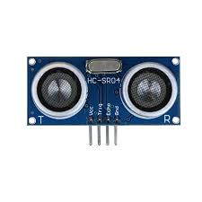 | ເຊນເຊີ HC-SR04 Ultrasonic Sensor | ວັດໄລຍະທາງຈາກວັດຖຸດ້ວຍຄື້ນສຽງ (Trig/Echo). | Digital Sensor |
| 16 | 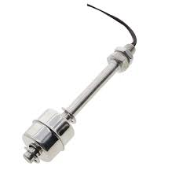 | ເຊນເຊີລະດັບນໍ້າ (Float Switch) | ໃຊ້ລູກລອຍເພື່ອກວດຈັບສະຖານະລະດັບນໍ້າ (ON/OFF). | Digital Sensor |
| 17 | 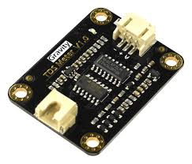 | Analog TDS Sensor | ວັດຄ່າສານລະລາຍລວມໃນນໍ້າ ເພື່ອກວດສອບຄຸນນະພາບນໍ້າ. | Analog Sensor |
📤 ອຸປະກອນສັ່ງງານ/ສະແດງຜົນ (Output Devices)
| ລ/ດ | ຮູບ | ຊື່ອຸປະກອນ | ໜ້າທີ່ ແລະ ລາຍລະອຽດ | ປະເພດ |
|---|---|---|---|---|
| 14 | 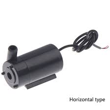 | ຫຼອດໄຟ LED 5mm | ສະແດງສະຖານະດ້ວຍແສງ (ຕິດ/ດັບ). | Digital Output |
| 19 | 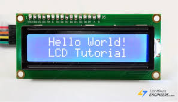 | ຈໍສະແດງຜົນ I2C LCD | ສະແດງຂໍ້ຄວາມ ຫຼື ຕົວເລກ. ໃຊ້ສາຍພຽງ 4 ເສັ້ນ (SDA, SCL). | Digital Output |
| 8 | 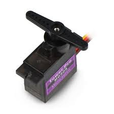 | Servo Motor MG90S | ມໍເຕີທີ່ຄວບຄຸມການໝູນໃຫ້ຢຸດທີ່ມຸມກຳນົດໄດ້ (0-180 ອົງສາ). | Output (PWM) |
| 7 | 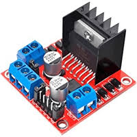 | L298N DC Motor Driver | ແຜ່ນວົງຈອນຂັບມໍເຕີ. ໃຊ້ຄວບຄຸມທິດທາງ ແລະ ຄວາມໄວ ຂອງມໍເຕີ DC. | Output/Driver |
| 11 | ປໍ້ານໍ້າຂະໜາດນ້ອຍ | ໃຊ້ໃນການຂັບເຄື່ອນນໍ້າ (ເຊັ່ນ: ລະບົບຫົດນໍ້າ). | Output/Actuator | |
| 24 | 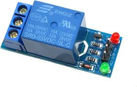 | Relay Module 5V | ສະວິດໄຟຟ້າ. ໃຊ້ໄຟ 5V ຈາກ Arduino ໄປຄວບຄຸມການເປີດ-ປິດ ໄຟ 220V. | Digital Output |
7. ຄູ່ມືການຕໍ່ສາຍໄຟ (Wiring Guide) ທີ່ສຳຄັນ
LED (Output)
- ຂາ Anode (ຍາວ): ຕໍ່ໃສ່ຂາ Digital Pin (ເຊັ່ນ 13) ຜ່ານຕົວຕ້ານທານ 220 Ohm.
- ຂາ Cathode (ສັ້ນ): ຕໍ່ໃສ່ຂາ GND.
ປຸ່ມກົດ (Input) (ແບບ Pull-down)
- ຂາ 1: ຕໍ່ໃສ່ 5V.
- ຂາ 2: ຕໍ່ໃສ່ຂາ Digital Pin (ເຊັ່ນ 2) ແລະ ຕໍ່ໃສ່ GND ຜ່ານຕົວຕ້ານທານ 10K Ohm.
DHT11 (Input)
- VCC (+): ຕໍ່ໃສ່ 5V.
- GND (-): ຕໍ່ໃສ່ GND.
- Data (S): ຕໍ່ໃສ່ຂາ Digital Pin (ເຊັ່ນ 2).
I2C LCD (Output)
- VCC: ຕໍ່ໃສ່ 5V.
- GND: ຕໍ່ໃສ່ GND.
- SDA: ຕໍ່ໃສ່ຂາ A4 (ຂອງ UNO).
- SCL: ຕໍ່ໃສ່ຂາ A5 (ຂອງ UNO).
8. ການວິເຄາະໂປຣເຈັກທັງສາມ (ຈາກໂຄດຕົວຢ່າງ)
8.1. ໂປຣເຈັກ 1: ລະບົບກວດຈັບການເຄື່ອນໄຫວ (PIR + Servo)
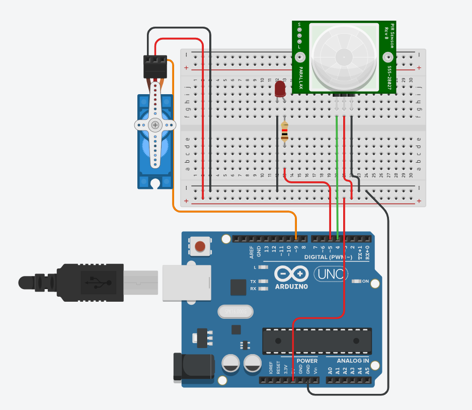ຫຼັກການ: ໃຊ້ PIR Sensor (Input) ເພື່ອກວດຈັບການເຄື່ອນໄຫວ. ຖ້າກວດຈັບໄດ້, ໃຫ້ສັ່ງ Servo Motor (Output) ໝູນເປີດ ແລະ ເປີດໄຟ LED (Output).
// ໂຄດຈາກ pro1.ino
#include <Servo.h>
Servo myservo;
int pir = 4; // ກໍານົດຂາ PIR Sensor ເປັນຂາ 4
int led_RED = 5; // ກໍານົດຂາ LED ເປັນຂາ 5
void setup() {
pinMode(led_RED, OUTPUT);
pinMode(pir, INPUT);
myservo.attach(9, 500, 2500); // ບອກວ່າ Servo ຕໍ່ຢູ່ຂາ 9
Serial.begin(9600);
myservo.write(0); // ສັ່ງໃຫ້ Servo ໝູນໄປທີ່ 0 ອົງສາ (ປິດ) ໃນຕອນເລີ່ມຕົ້ນ
}
void loop() {
int value = digitalRead(pir); // ອ່ານຄ່າຈາກ PIR Sensor
Serial.println(value);
delay(300);
if (value == 1) { // ຖ້າ value ເປັນ 1 (ກວດຈັບການເຄື່ອນໄຫວໄດ້)
digitalWrite(led_RED, HIGH); // ສັ່ງໃຫ້ LED ຕິດ
myservo.write(90); // ສັ່ງໃຫ້ Servo ໝູນໄປທີ່ 90 ອົງສາ (ເປີດ)
} else { // ຖ້າບໍ່ດັ່ງນັ້ນ (value ເປັນ 0)
digitalWrite(led_RED, LOW); // ສັ່ງໃຫ້ LED ດັບ
myservo.write(0); // ສັ່ງໃຫ້ Servo ໝູນກັບໄປທີ່ 0 ອົງສາ (ປິດ)
}
}
8.2. ໂປຣເຈັກ 2: ລະບົບວັດອຸນຫະພູມ ແລະ ຄວບຄຸມມໍເຕີ
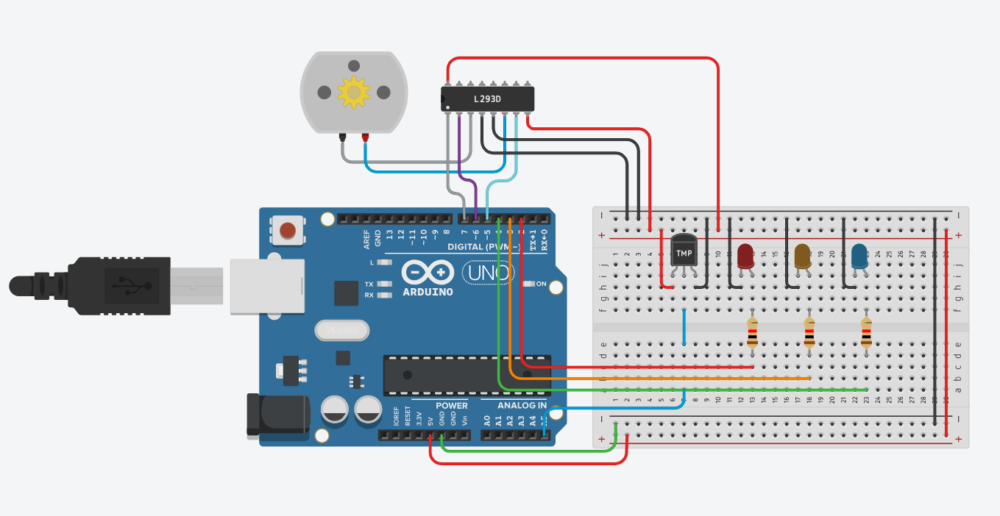ຫຼັກການ: ໃຊ້ Temp Sensor (Input ແບບ Analog) ເພື່ອອ່ານຄ່າອຸນຫະພູມ. ນຳຄ່ານັ້ນມາຄວບຄຸມທັງໄຟ LED (Output) ເພື່ອສະແດງສະຖານະ (ຮ້ອນ/ປົກກະຕິ/ເຢັນ) ແລະ ຄວບຄຸມຄວາມໄວມໍເຕີ (Output ແບບ PWM).
// ໂຄດຈາກ pro2.ino
#define TEMP A5 // ກໍານົດຂາ Temp Sensor ເປັນ A5 (Analog Input)
#define red 2
#define orange 3
#define green 4
#define IN2 5
#define IN1 6
#define EN1 7 // ຂາຄວບຄຸມ Motor Driver
const int hot = 87; // ກໍານົດຄ່າອຸນຫະພູມ "ຮ້ອນ"
const int cold = 75; // ກໍານົດຄ່າອຸນຫະພູມ "ເຢັນ"
void setup() {
pinMode(red, OUTPUT);
pinMode(orange, OUTPUT);
pinMode(green, OUTPUT);
pinMode(TEMP, INPUT); //
pinMode(IN2, OUTPUT);
pinMode(IN1, OUTPUT);
pinMode(EN1, OUTPUT); //
Serial.begin(9600);
}
void loop() {
int sensor = analogRead(TEMP); // 1. ອ່ານຄ່າ Input (0-1023)
float voltage = (sensor / 1024.0) * 5.0;
float tempC = (voltage - .5) * 100; // 2. ປະມວນຜົນ (ແປງເປັນອົງສາ)
float tempF = (tempC * 1.8) + 32; //
digitalWrite(EN1, HIGH); // ເປີດການທໍາງານຂອງ Motor Driver
digitalWrite(IN1, LOW); // ກໍານົດທິດທາງມໍເຕີ
// 3. ສັ່ງງານ Output
if (tempF < cold) { // ຖ້າອາກາດເຢັນ
digitalWrite(red, LOW);
digitalWrite(orange, LOW);
digitalWrite(green, HIGH); // ເປີດໄຟຂຽວ
analogWrite(IN2, 40); // ມໍເຕີໝູນຊ້າ
} else if (tempF >= hot) { // ຖ້າອາກາດຮ້ອນ
digitalWrite(red, HIGH); // ເປີດໄຟແດງ
digitalWrite(orange, LOW);
digitalWrite(green, LOW);
analogWrite(IN2, 95); // ມໍເຕີໝູນໄວຂຶ້ນ
} else { // ຖ້າອາກາດປົກກະຕິ
digitalWrite(red, LOW);
digitalWrite(orange, HIGH); // ເປີດໄຟສົ້ມ
digitalWrite(green, LOW);
analogWrite(IN2, 70); // ມໍເຕີໝູນປານກາງ
}
}
8.3. ໂປຣເຈັກ 3: ລະບົບວັດໄລຍະທາງ (Ultrasonic)
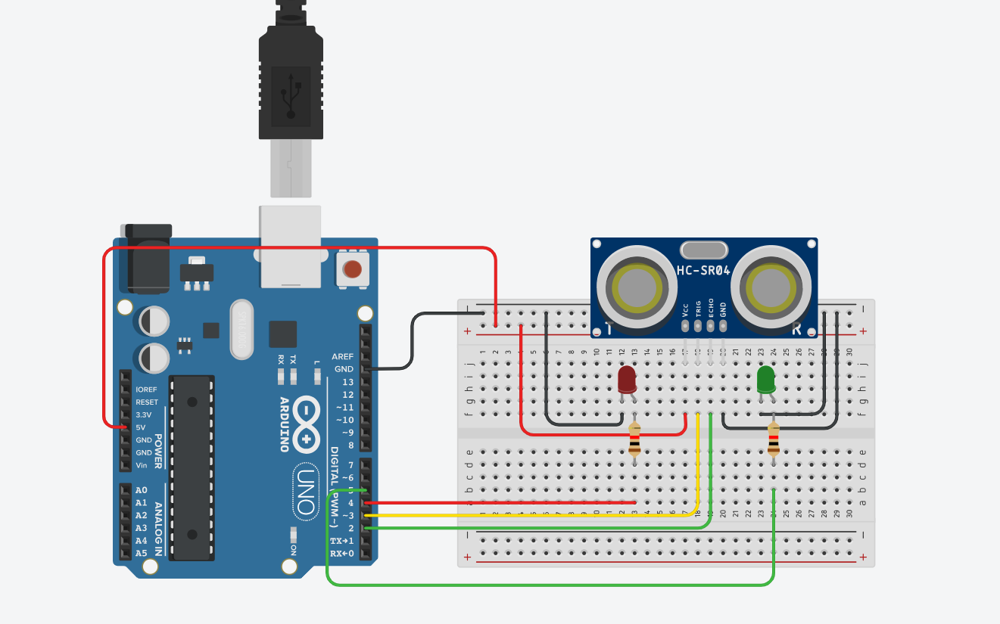ຫຼັກການ: ໃຊ້ Ultrasonic Sensor (Input) ເພື່ອວັດໄລຍະທາງ. ໂດຍການສົ່ງສັນຍານອອກທາງ Trig ແລະ ຮັບກັບທາງ Echo. ນຳໄລຍະທາງທີ່ໄດ້ມາຄວບຄຸມໄຟ LED (Output) ເພື່ອແຈ້ງເຕືອນ.
// ໂຄດຈາກ pro3.ino
#define Green 5
#define Red 4
#define ECHOPIN 2 //
#define TRIGPIN 3 //
void setup()
{
Serial.begin(9600);
pinMode(ECHOPIN,INPUT); // ຂາ Echo ເປັນ Input
pinMode(TRIGPIN,OUTPUT); // ຂາ Trig ເປັນ Output
pinMode(Red,OUTPUT);
pinMode(Green,OUTPUT);
}
void loop()
{
// 1. ສ້າງສັນຍານ Pulse ເພື່ອສົ່ງຄື້ນສຽງ
digitalWrite(TRIGPIN,LOW);
delay(2);
digitalWrite(TRIGPIN,HIGH); //
delay(1);
digitalWrite(TRIGPIN,LOW); //
// 2. ຮັບຄ່າ ແລະ ປະມວນຜົນ
int distance = pulseIn(ECHOPIN,HIGH); // ຮັບເວລາທີ່ສຽງເດີນທາງ
distance = distance/58; // ແປງເວລາເປັນໄລຍະທາງ (cm)
Serial.print(distance);
Serial.println(" cm");
delay(500);
// 3. ສັ່ງງານ Output
if(distance > 100){ // ຖ້າໄກກວ່າ 100 cm
digitalWrite(Red, HIGH); // ໄຟແດງຕິດ
digitalWrite(Green, LOW);
} else if(distance > 20){ // ຖ້າຢູ່ລະຫວ່າງ 20-100 cm
digitalWrite(Red, LOW);
digitalWrite(Green, HIGH); // ໄຟຂຽວຕິດ
} else { // ຖ້າໃກ້ກວ່າ 20 cm
digitalWrite(Red, LOW); //
digitalWrite(Green, LOW); //
}
}